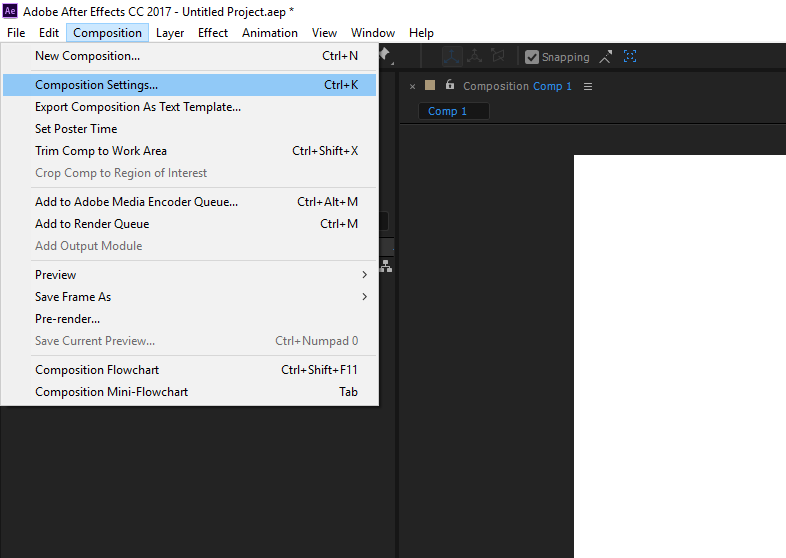
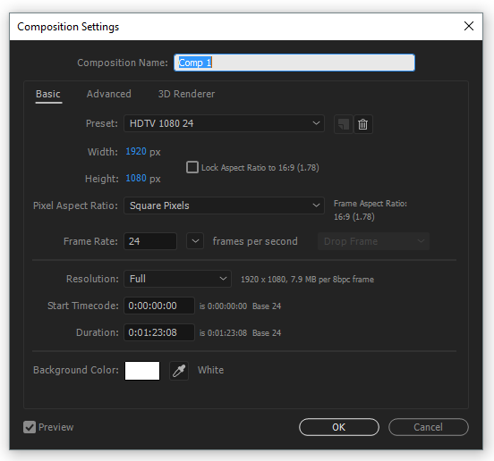

Digital Animation Process
Asset creation
Asset creation is the process of drawing your characters, props and environments. In traditional animation, different assets would be drawn in separate cels to be superimposed later. In digital animation, this process is generally done in illustration software such as Photoshop, Illustrator and even After Effects itself. You can start with an illustration that contains a complete scene, with characters, environment and props, but having each of these parts as a separate element makes it much more manageable later on.
Importing Assets in After Effects
A very important part of asset import process is separating each element in its own layer. For example with a character, you'll need to have separate layers for the head, the torso, for different parts of each arm, for different parts of each leg, for each hand and each foot, and depending on the character, also for facial features that will be animated separately like the mouth and eyes. If this is not done properly you'll end up with a flat image that can't be animated at all.
How to separate layers in Adobe Illustrator: https://drive.google.com/open?id=1MmXRSpARlnlCaBB4WfWdnmmnq3QK-nj5
When you finish preparing your assets in Photoshop or Illustrator, you can start importing them in After Effects. Always check if your layers were properly imported so you don't have any problems in the future.
How to import assets to After Effects: https://drive.google.com/open?id=1-B1bs3AJCHieuuZoSs14nayMOOoNRHxg
Composition Settings
Each composition in After Effects has its own settings, so make sure to check if you have everything configured properly to avoid problems in the future.
To change your composition settings, select 'Composition>Composition Settings' from the top menu.

The easiest way to ensure your settings are correct is to use the preset 'HDTV 1080 24'. This will set your resolution to HD and your frame rate to 24 frames per second.

Animation Workflow
Animating in After Effects is a very simple process once you get used to the interface and tools at your disposal.
Here is a series of videos showing the animation process in After Effects (you will need your Lynda account to watch these videos):
https://www.lynda.com/After-Effects-tutorials/Editing-numerically-Timeline-panel/78544/79271-4.html
https://www.lynda.com/After-Effects-tutorials/Animating-position/78544/559748-4.html
https://www.lynda.com/After-Effects-tutorials/Editing-motion-paths/78544/79274-4.html
https://www.lynda.com/After-Effects-tutorials/Animating-scale-rotation-opacity/78544/79275-4.html
Exporting your animation
Once your animation is done, you'll need to render it to a video file. It is important to use the right settings so you won't end up with a pixelated looking video.
In this course we will work with these settings:
Video Format: H264 (.mp4) Resolution: 1920x1080 pixels Frames Rate (FPS): 24 Field Order: Progressive Aspect: Square Pixels (1.0) Profile: Main Level: 4.1 Bitrate Encoding: VBR 1 pass Target Bitrate: 5 Mbps Max Bitrate: 6 Mbps
Render settings in After Effects: https://drive.google.com/open?id=1QwEPYIKSqfpRsJegs3lSV0hBFM9ToEDf